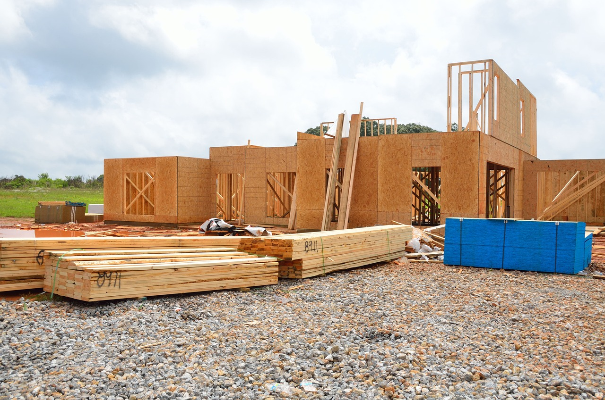

Mounting & Installation

A building plan check is required prior to obtaining a building permit if the installation
a part of any of the following:
A new building or structure;
Addition to a building;
Structural alteration to building;
Interior modification/change of floor plan (i.e., cubicle layouts (see furniture
requirements above), removing or adding walls);
Walls, partitions (including modular or temporary partitions and cubicles),
counters and cases that are over 69 inches tall as measured from the floor
surface.
A building permit is required when the installation is part of a larger project that
involves building, constructing, remodeling, repairing, demolishing, removing or moving
any building or structure, including garages, patios, fences, accessory buildings, etc.
A building permit is not required when:
The installation cost (excluding the cost of the furniture) is less than $300,
unless it affects the structural stability, life safety of the occupancy or the work
will change the occupancy (i.e., converting office space to assembly space).
Cases, counters and partitions are not over 69 inches tall (see requirements for
building plan check above), unless they alter exit paths or violate other portions
of the code, such as disabled access, etc.
Cubicles and modular partitions allowed by code and less than 69 inches in height do
not require a building plan check or building permit, unless the installation violates
some other code requirement, such as disabled access clearances, exiting requirements,
etc